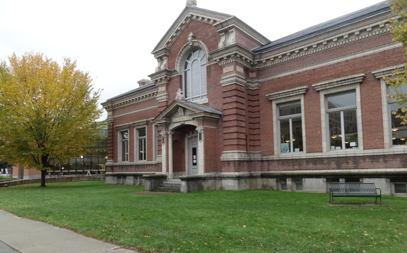

Fletcher Free Library
This is a public library downtown, for the times you need to take a walk and get away from campus.
The largest of the three libraries on campus with three floor, getting quieter with each level. The first floor is a great place to get group work done or chat with friends. The second and third floor is a great place to get studying done on your own.
A coffee shop in the Davis Center on campus. This is a busier atmosphere for people who like to work with background noise.
This is a smaller library on campus with a historical feel.
Located by Converse Hall, the medical library has comfy seats and standing desks. Is also opened pretty late and the weekends.
This is a public library downtown, for the times you need to take a walk and get away from campus.
Coffee shop at the top of Church Street downtown Burlington. They have great coffee and food and comfortable seating.